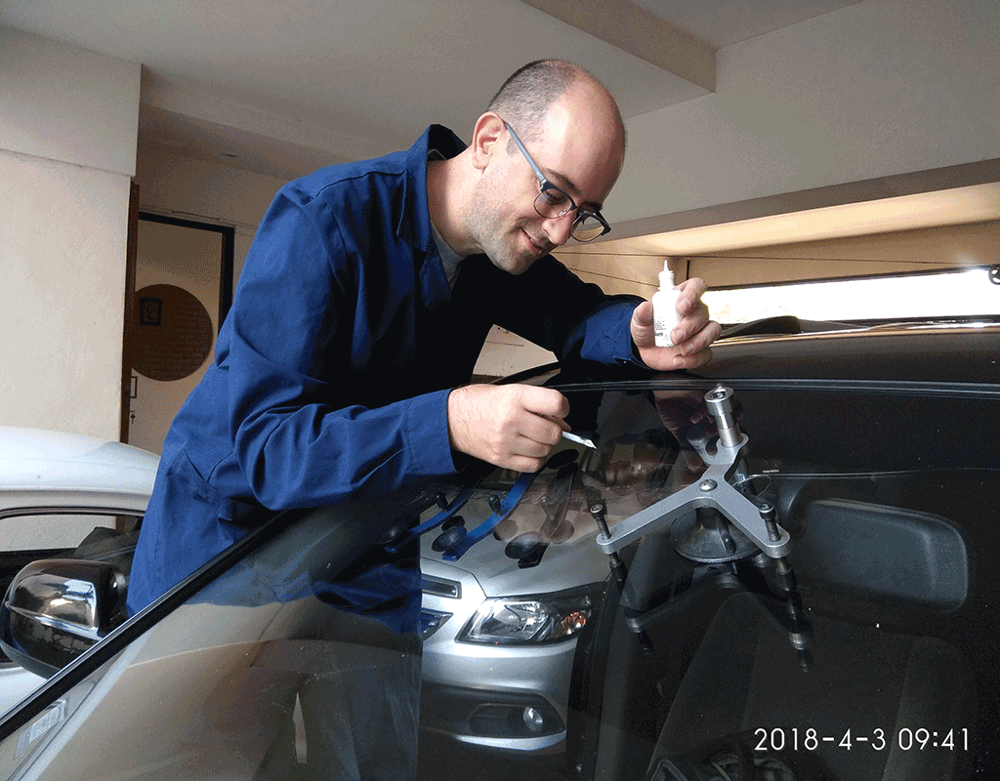

Inicios
 Octubre de 1999. Me visitaban mis tios, ellos viven en EEUU, y durante una la salida a cenar, viajabamos en taxi y de golpe mi tio dice "ves el parabrisas que esta roto? Sabes que se puede reparar?", creo que mi cara de incredulidad fue la que ponemos todos la primera vez que nos comentan la posibilidad de reparar, luego mientras comiamos me explico en que consistia el proceso. Y es aso que desde fines de 1999 comienza el proyecto de tratar de brindar el mejor servicio de reparación de parabrisas a domicilio. Para ello nos pusimos en contacto con una empresa de EEUU lider en el rubro dedicada desde 1984 a desarrollar productos para la reparación de Parabrisas. Surgimos como respuesta a una necesidad de brindar un servicio a domicilio que le permitiera ahorrar tiempo a mis clientes, al mismo tiempo que preservaban el parabrisas evitando filtraciones y conservando la insonorización del vehiculo.